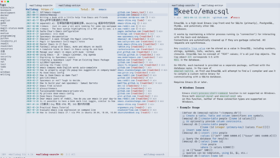

Hay publicado un nuevo paquete de wallabag para Emacs en GitHub. De momento no está disponible en Melpa u otros repositorios, así que si quieres hacer uso, tienes que clonar el repositorio e instalar algunas dependencias, nada complicado. Si tienes una instancia de Wallabag y quieres disfrutar de todos tus artículos guardados en Wallabag desde Emacs, sigue este artículo que te va a encantar.

Vamos a clonar el repositorio:
Instalamos los siguientes paquetes necesarios, disponibles en Melpa
M-x package-refresh-contents RET
M-x package-install RET request RET
M-x package-install RET emacsql-sqlite RETCrea un nuevo clientes en tu instancia de Wallabag para conseguir el Identificador del cliente y Secreto del cliente.
Añade en tu archivo de configuración de emacs las siguientes líneas, añadiendo la url, usuario,….
(add-to-list 'load-path "~/.emacs.d/lisp/wallabag/")
(require 'wallabag)
(setq wallabag-host "https://xx.xx.xx") ;; wallabag server host name
(setq wallabag-username "xx") ;; username
(setq wallabag-password "xx") ;; password
(setq wallabag-clientid "xx") ;; created with API clients management
(setq wallabag-secret "xx") ;; created with API clients managementPara iniciar Wallabag introduciremos en emacs:
La primera vez, tienes que presionar u, luego introduce el número de artículos que quieres descargar del servidor.
Visita la el Repositorio en GitHub donde conocerás más opciones.
Publicado por Angel el jueves 15 abril del 2021
También te puede interesar:
Powered by org-bash-blog
Writing in orgmode whith emacs

Este obra está bajo una licencia de Creative Commons Reconocimiento-NoComercial-CompartirIgual 4.0 Internacional.